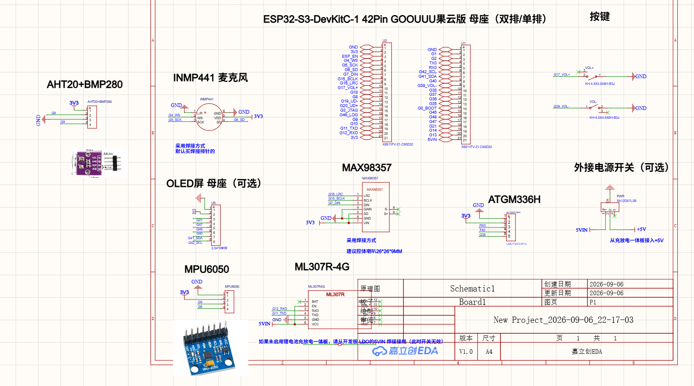

Board Reference
ESP32-S3-DevKitC-1 42Pin GOOUUU 果云版 · 底板接口与模块整理
底板为双排 2×21P 母座结构，可插入 42Pin 的 ESP32-S3-DevKitC-1 核心板（单排/双排均可）。板载两路 I2C、两组 I2S、UART0/UART1 引出，并预留 7 个可选焊接模块位。
原理图 V1.0 · A4
嘉立创EDA · 2026-09-06
核心板 N16R8 · 16MB Flash + 8MB PSRAM
板载 RGB LED @ GPIO48

你上传的原理图全图（点击可放大查看丝印）
核心与供电概览 CORE & POWER
| 核心板 | ESP32-S3-DevKitC-1 42Pin（果云版），插在底板 U1/U2 两组 21P 母座上；板载 WS2812 RGB LED 接在 GPIO48，BOOT 按键接 GPIO0。 |
|---|
| 3V3 供电 | 由核心板 LDO 输出，引到 U2 的第 2、21 脚，供所有 3.3V 模块使用。 |
|---|
| 5V 供电 | +5V 从「充放电一体板（锂电池充放电模块）」接入 → 经电源开关 → 5VIN（U1 第 21 脚）。若底板 LDO 的 5VIN 直接焊接短接，则开关失效。 |
|---|
| USB | G19_UD- / G20_UD+（GPIO19/20）为 USB D-/D+，同时引到 U2 的第 13、14 脚。 |
|---|
排针 / 母座引脚定义 PINOUT
U2 · 左排 21PX6511FV-21-C85D32
| # | 丝印网络 | 功能 |
|---|
| 1 | GND | 电源 |
| 2 | 3V3 | 电源 |
| 3 | ESP_EN | 核心板使能/复位 |
| 4 | G4_WS | I2S 麦克风 WS |
| 5 | G5_SCK | I2S 麦克风 SCK |
| 6 | G6_SD | I2S 麦克风 SD |
| 7 | G7_DIN | I2S 功放 DIN |
| 8 | G15_BCLK | I2S 功放 BCLK |
| 9 | G16_LRC | I2S 功放 LRC |
| 10 | G17_VOL+ | 音量+ 按键 |
| 11 | G18 | 通用 IO |
| 12 | G8 | I2C 传感器总线 |
| 13 | G19_UD- | USB D- |
| 14 | G20_UD+ | USB D+ |
| 15 | G43_JTAG | UART0 TX / JTAG |
| 16 | G46_LOG | 日志输出（strapping） |
| 17 | G9 | I2C 传感器总线 |
| 18 | G10 | 通用 IO |
| 19 | G11_TXD | UART1 TX |
| 20 | G12_RXD | UART1 RX |
| 21 | 3V3 | 电源 |
U1 · 右排 21PX6511FV-21-C85D32
| # | 丝印网络 | 功能 |
|---|
| 1 | GND | 电源 |
| 2 | G1 | 通用 IO |
| 3 | G2 | 通用 IO |
| 4 | TX0 | UART0 TX (GPIO43) |
| 5 | RX0 | UART0 RX (GPIO44) |
| 6 | G42_SCL | I2C SCL |
| 7 | G41_SDA | I2C SDA |
| 8 | G40 | 通用 IO |
| 9 | G39_VOL- | 音量- 按键 |
| 10 | G38 | GPS 模块第 5 脚 |
| 11 | G37 | PSRAM 占用 |
| 12 | G36 | PSRAM 占用 |
| 13 | G35 | PSRAM 占用 |
| 14 | G0_BOOT | BOOT 按键（strapping） |
| 15 | G45 | strapping 脚 |
| 16 | G48 | 板载 WS2812 RGB LED |
| 17 | G47 | OLED 数据线 |
| 18 | G21 | OLED 数据线 |
| 19 | G14 | 通用 IO |
| 20 | G13 | 通用 IO |
| 21 | 5VIN | 电源 5V 输入 |
I2S 音频
I2C 传感器
UART 串口
USB USB
电源 电源
PSRAM 占用 不可用
板载按键 BUTTONS
| 按键 | 连接 | 器件 | 说明 |
|---|
| 音量 + | GPIO17 ↔ GND | KH-4.5X4.5X6H-B3J | 按下拉低，需内部上拉（VOL+ 网络） |
| 音量 − | GPIO39 ↔ GND | KH-4.5X4.5X6H-B3J | 按下拉低，需内部上拉（VOL- 网络） |
| BOOT | GPIO0 ↔ GND | 核心板板载 | 下载模式按键（strapping） |
板载 / 可选模块 ONBOARD MODULES
AHT20 + BMP280
温湿度 + 气压传感器 · I2C
MPU6050
六轴陀螺仪 + 加速度计 · I2C
INMP441 麦克风
数字 MEMS 麦克风 · I2S
| 脚 | 网络 |
|---|
| L/R | GND |
| WS | G4 |
| SCK | G5 |
| SD | G6 |
| VDD | 3V3 |
| GND | GND |
MAX98357
I2S 数字功放 · I2S
| 脚 | 网络 |
|---|
| LRC | G16 |
| BCLK | G15 |
| DIN | G7 |
| GAIN | GND |
| SD | 3V3 |
| VIN | 3V3 |
| S+/S− | 喇叭 |
OLED 屏母座
8P 2.54mm 单排 · I2C/SPI
| 脚 | 网络 |
|---|
| 1 | GND |
| 2 | 3V3 |
| 3 | G21 |
| 4 | G47 |
| 5 | G45 |
| 6 | G40 |
| 7 | G41_SDA |
| 8 | G42_SCL |
ATGM336H
GPS / 北斗定位 · UART
| 脚 | 网络 |
|---|
| 1 | GND |
| 2 | 3V3 |
| 3 | RX0 (G44) |
| 4 | TX0 (G43) |
| 5 | G38 |
ML307R-4G
Cat.1 4G 通信模块 · UART
| 脚 | 网络 |
|---|
| 1 BAT | 未连接 |
| 2 EN | 5VIN |
| 3 RXD | G12 |
| 4 TXD | G11 |
| 5 GND | GND |
| 6 VCC | 5VIN |
GPIO 资源占用总表 GPIO MAP
| GPIO | 板载用途 | 排针位置 | 备注 |
|---|
| 0 | BOOT 按键 | U1-14 G0_BOOT | strapping，决定启动模式 |
| 1 | — | U1-2 | 通用 IO |
| 2 | — | U1-3 | 通用 IO |
| 3 | — | 未引出 | strapping |
| 4 | INMP441 WS | U2-4 | I2S 麦克风 |
| 5 | INMP441 SCK | U2-5 | I2S 麦克风 |
| 6 | INMP441 SD | U2-6 | I2S 麦克风 |
| 7 | MAX98357 DIN | U2-7 | I2S 功放 |
| 8 | 传感器 I2C | U2-12 | AHT20 / MPU6050 |
| 9 | 传感器 I2C | U2-17 | AHT20 / MPU6050 |
| 10 | — | U2-18 | 通用 IO |
| 11 | ML307R TXD | U2-19 G11_TXD | UART1 |
| 12 | ML307R RXD | U2-20 G12_RXD | UART1 |
| 13 | — | U1-20 | 通用 IO |
| 14 | — | U1-19 | 通用 IO |
| 15 | MAX98357 BCLK | U2-8 | I2S 功放 |
| 16 | MAX98357 LRC | U2-9 | I2S 功放 |
| 17 | 音量+ 按键 | U2-10 G17_VOL+ | 按键到 GND |
| 18 | — | U2-11 | 通用 IO |
| 19 | USB D− | U2-13 | USB 数据线 |
| 20 | USB D+ | U2-14 | USB 数据线 |
| 21 | OLED | U1-18 | I2C/SPI 均可 |
| 26–32 | SPI Flash | 未引出 | Flash 专用 |
| 33–37 | Octal PSRAM | U1-13/12/11 (G35/36/37) | N16R8 下不可用 |
| 38 | ATGM336H 第 5 脚 | U1-10 | GPS 模块预留 |
| 39 | 音量− 按键 | U1-9 G39_VOL- | 按键到 GND |
| 40 | OLED | U1-8 | SPI 数据线 |
| 41 | OLED SDA | U1-7 G41_SDA | I2C |
| 42 | OLED SCL | U1-6 G42_SCL | I2C |
| 43 | ATGM336H TX0 | U1-4 TX0 | UART0（默认控制台） |
| 44 | ATGM336H RX0 | U1-5 RX0 | UART0（默认控制台） |
| 45 | — | U1-15 | strapping |
| 46 | 日志 | U2-16 G46_LOG | strapping |
| 47 | OLED | U1-17 | SPI 数据线 |
| 48 | 板载 RGB LED | U1-16 | WS2812 单灯 |
接线与使用注意 CAUTIONS
1. GPIO35 / 36 / 37 不可用
- N16R8 模组使用 8MB Octal PSRAM，占用了 GPIO33–GPIO37；右排母上标着 G35/G36/G37 的三个脚实际不能当普通 IO 用。
2. UART0 与 GPS 冲突
- ATGM336H 接在 GPIO43/44，而这两个脚是 ESP32-S3 的默认串口控制台。若同时使用 GPS，需要关闭控制台日志、改用 USB-CDC 输出，或把 GPS 软件映射到其他 UART。
3. ML307R 的 TX/RX 需核对
- 原理图上模块 RXD（第 3 脚）接网络 G12_RXD、TXD（第 4 脚）接网络 G11_TXD。网络名以 ESP 侧命名，串口需交叉连接；实际接线前建议实测确认，必要时在固件里对调 TX/RX。
4. 麦克风与功放是两组独立 I2S
- INMP441 用 G4/G5/G6，MAX98357 用 G7/G15/G16，时钟引脚不共用。要用同一个 I2S 控制器做「录 + 放」，需要把其中一组改接到相同引脚，或使用两个 I2S 外设。
5. 两路 I2C 总线不要混接
- 传感器总线：G8 / G9（AHT20、MPU6050）；排针 I2C：G41_SDA / G42_SCL（OLED）。两条总线独立寻址，设备地址冲突时才需要分开。
6. strapping 脚与供电
- GPIO0 / 3 / 45 / 46 为 strapping 脚，其中 G45、G46 引到排针，外接电路不要在上电时强拉电平。
- 核心板 3V3 由板载 LDO 提供；5V 需从充放电一体板经 +5V → 电源开关 → 5VIN 接入。若 5VIN 被直接短接到 LDO，开关将失效。
建议的后续动作 NEXT STEPS
| 优先级 | 动作 | 目的 |
|---|
| 高 | 用万用表实测 G8/G9 与传感器模块的通断 | 确认 AHT20/MPU6050 的实际焊接与地址 |
| 高 | 确认核心板型号与 PSRAM 配置（已实测 N16R8） | 排除 G35/36/37 误用 |
| 中 | 跑一次 I2C 扫描（G8/G9 与 G41/G42） | 确认板上已焊了哪些模块 |
| 低 | 按模块逐个写驱动示例 | 传感器 → OLED → 音频 → 4G/GPS |